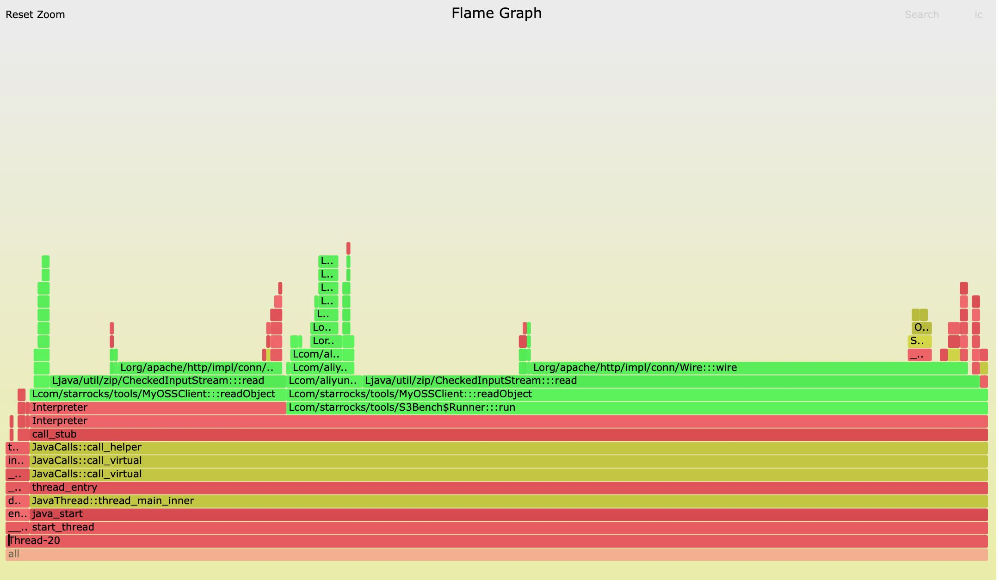

log4j引起高CPU使用率的问题
Table of Contents
1. 问题描述
最近在搞个benchmark工具，目的是为了测试OSS/S3/HDFS的随机读取性能。最开始只测试了OSS/S3，某种workload下面CPU使用率大约是在40%左右，后来引入了HDFS(hadoop-client)重新测试OSS/S3的workload，CPU使用率就上升到了90%左右。我可以确定测试OSS/S3中没有使用任何HDFS相关的代码，只是引入了jar而导致高CPU使用率。
引入的是hdfs-client 2.8.5版本，我尝试了一下切换到其他版本也存在同样的问题。高CPU使用率相对还比较好分析，尝试了下面两种方法来定位。
<properties>
<project.build.sourceEncoding>UTF-8</project.build.sourceEncoding>
<java.version>1.8</java.version>
<hadoop.version>2.8.5</hadoop.version>
</properties>
<dependency>
<groupId>org.apache.hadoop</groupId>
<artifactId>hadoop-hdfs-client</artifactId>
<version>${hadoop.version}</version>
</dependency>
<dependency>
<groupId>org.apache.hadoop</groupId>
<artifactId>hadoop-common</artifactId>
<version>${hadoop.version}</version>
</dependency>
2. Java HPROF
https://docs.oracle.com/javase/8/docs/technotes/samples/hprof.html
这个东西好处就是系统自带，而且可以直接在本机上运行，不用像jvisualvm那样需要打洞和远程连接上来。这个工具可以分析CPU和heap使用情况，使用起来也非常方便 `java -agentlib:hprof=cpu=samples,depth=5` . 其中samples表示是采样方式，而depth=5表示只是对5层stack进行聚合。期间JVM会对所有活跃进程进行采样，每个stack trace形成一个TRACE，然后按照TRACE进行group by. 输出入下图所示。
TRACE 300648:
java.net.SocketInputStream.socketRead0(SocketInputStream.java:Unknown line)
java.net.SocketInputStream.socketRead(SocketInputStream.java:116)
java.net.SocketInputStream.read(SocketInputStream.java:171)
java.net.SocketInputStream.read(SocketInputStream.java:141)
org.apache.http.impl.conn.LoggingInputStream.read(LoggingInputStream.java:87)
TRACE 300727:
org.apache.log4j.Category.getEffectiveLevel(Category.java:442)
org.apache.log4j.Category.log(Category.java:855)
org.apache.commons.logging.impl.Log4JLogger.debug(Log4JLogger.java:155)
org.apache.http.impl.conn.Wire.wire(Wire.java:72)
org.apache.http.impl.conn.Wire.input(Wire.java:116)
TRACE 301126:
com.starrocks.tools.MyOSSClient.readObject(MyOSSClient.java:30)
com.starrocks.tools.S3Bench$Runner.run(S3Bench.java:91)
java.lang.Thread.run(Thread.java:748)
TRACE 300688:
org.apache.log4j.Category.callAppenders(Category.java:204)
org.apache.log4j.Category.forcedLog(Category.java:391)
org.apache.log4j.Category.log(Category.java:856)
org.apache.commons.logging.impl.Log4JLogger.debug(Log4JLogger.java:155)
org.apache.http.impl.conn.Wire.wire(Wire.java:72)
TRACE 300657:
org.apache.http.impl.conn.Wire.wire(Wire.java:65)
org.apache.http.impl.conn.Wire.input(Wire.java:116)
org.apache.http.impl.conn.LoggingInputStream.read(LoggingInputStream.java:91)
org.apache.http.impl.io.SessionInputBufferImpl.streamRead(SessionInputBufferImpl.java:137)
org.apache.http.impl.io.SessionInputBufferImpl.read(SessionInputBufferImpl.java:197)
TRACE 300658:
org.apache.http.impl.conn.Wire.wire(Wire.java:79)
org.apache.http.impl.conn.Wire.input(Wire.java:116)
org.apache.http.impl.conn.LoggingInputStream.read(LoggingInputStream.java:91)
org.apache.http.impl.io.SessionInputBufferImpl.streamRead(SessionInputBufferImpl.java:137)
org.apache.http.impl.io.SessionInputBufferImpl.read(SessionInputBufferImpl.java:197)
....
CPU SAMPLES BEGIN (total = 6054) Sat Mar 26 12:01:15 2022
rank self accum count trace method
1 56.34% 56.34% 3411 300648 java.net.SocketInputStream.socketRead0
2 4.99% 61.33% 302 300727 org.apache.log4j.Category.getEffectiveLevel
3 4.92% 66.25% 298 301126 com.starrocks.tools.MyOSSClient.readObject
4 2.81% 69.06% 170 300688 org.apache.log4j.Category.callAppenders
5 2.31% 71.37% 140 300657 org.apache.http.impl.conn.Wire.wire
6 2.20% 73.57% 133 300658 org.apache.http.impl.conn.Wire.wire
7 0.71% 74.28% 43 300785 java.util.zip.CheckedInputStream.read
8 0.63% 74.91% 38 301063 java.security.AccessController.doPrivileged
9 0.56% 75.47% 34 300760 java.util.zip.CheckedInputStream.read
10 0.50% 75.97% 30 300664 org.apache.http.impl.conn.Wire.wire
11 0.48% 76.45% 29 300642 java.lang.Object.clone
12 0.46% 76.91% 28 300660 org.apache.http.impl.conn.Wire.wire
因为这个工具是测试网络的，所以socketRead0很多这个也很正常，那么怀疑点就是log4j了。其实这个时候应该就可以分析出问题的原因了，但是我还有点不太相信这个结果： `org.apache.http.impl.conn.Wire.wire(Wire.java:72)` 这个地方调用了debug log，很可能就是造成CPU使用率很高的原因。但是我忽略这个过程，觉得这个工具不是特别靠谱，非常可惜，接着使用了更加复杂的profiling工具。
3. Java In Flames
https://netflixtechblog.com/java-in-flames-e763b3d32166
因为这里分析高CPU利用率问题，所以perf + flamegraph就非常自然了。但是如果直接上去perf，那么得到的就是JVM/JIT里面的一堆符号，没有办法定位到Java层面的stack trace. 这里需要使用一个perf-map-agent工具，我理解应该是可以将JVM里面的地址翻译成为Java symbol。这个工具我当时还没有太理解整个过程，所以费了一点时间弄清楚：
- 将JVM启动，并且确保长时间运行，拿到pid。可能老版本还需要加上 `java -XX:+PreserveFramePointer` 参数，但是我测试的是 `java version "1.8.0_202"` 似乎不加也没有问题。
- 使用 `perf record -p <pid> -g -F 99` 进行采样，这个时候得到的是JVM符号地址堆栈
- 跑一个perf-map-agent工具，将JVM符号地址和Java Symbol对应关系dump出来，到/tmp/perf-<pid>.map上。工具命令是 `java -cp attach-main.jar:$JAVA_HOME/lib/tools.jar net.virtualvoid.perf.AttachOnce <pid>` . 跑完之后JVM可以停止。
- 使用 `perf script | stackcollapse-perf.pl | flamegraph.pl` 生成火焰图，其中perf script会使用到 /tmp/perf-<pid>.map这个映射关系
perf-map-agent地址在这 https://github.com/jvm-profiling-tools/perf-map-agent. 因为整个过程比较复杂，所以作者还搞了一些脚本，但是纯粹使用脚本容易隐藏些问题，比如我就遇到了 libperfma.so 没有在当前目录下面的问题。
最后跑下来火焰图也是这样的，大部分时间都在 `org.apache.http.impl.conn.Wire:::wire` 这个函数上，看来这次应该能确定问题在这了。

4. Wire::wire函数实现
其实拿出代码来看，里面也没有什么复杂的。读取数据，然后拼接字符串，性能肯定不会是在jvm lib里面，唯一的原因就是在debug日志这块，这个和最开始Java HPROF的测试结果是可以对上的。
private void wire(final String header, final InputStream inStream)
throws IOException {
final StringBuilder buffer = new StringBuilder();
int ch;
while ((ch = inStream.read()) != -1) {
if (ch == 13) {
buffer.append("[\\r]");
} else if (ch == 10) {
buffer.append("[\\n]\"");
buffer.insert(0, "\"");
buffer.insert(0, header);
log.debug(id + " " + buffer.toString());
buffer.setLength(0);
} else if ((ch < 32) || (ch > 127)) {
buffer.append("[0x");
buffer.append(Integer.toHexString(ch));
buffer.append("]");
} else {
buffer.append((char) ch);
}
}
if (buffer.length() > 0) {
buffer.append('\"');
buffer.insert(0, '\"');
buffer.insert(0, header);
log.debug(id + " " + buffer.toString());
}
}
修复也比较简单，就是在log4j.properties里面加上 `log4j.logger.org.apache.http=WARN` 只打印出WARNING日志。